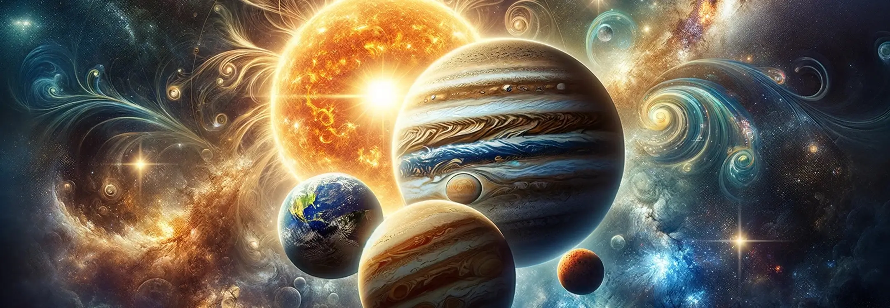
In astrological interpretation, the planets play a pivotal role, acting as agents of energy that influence various aspects of our lives. Each planet represents different facets of human experience, from our inner emotions and desires to our actions and reactions to the world around us. The placement of these celestial bodies in the zodiac at the time of our birth provides a unique cosmic blueprint that shapes our personalities, tendencies, and life paths. Astrologers analyze the positions of the planets, their movements, and their relationships to one another (aspects) to gain insights into an individual's character, potential challenges, and opportunities for growth, making the planets essential components in the rich tapestry of astrological practice.
The Sun and Moon, often referred to as the luminaries in astrology, serve as the foundational pillars of an astrological chart. The Sun represents our core identity, consciousness, and life force, reflecting our will and the essence of who we are. The Moon, on the other hand, governs our emotions, instincts, and subconscious needs, highlighting our inner world and emotional landscape. Together, these celestial bodies symbolize the fundamental duality of our existence—external and internal, conscious and subconscious. Their positions in the chart offer profound insights into our personality, emotional needs, and the way we express our individuality and relate to our surroundings.
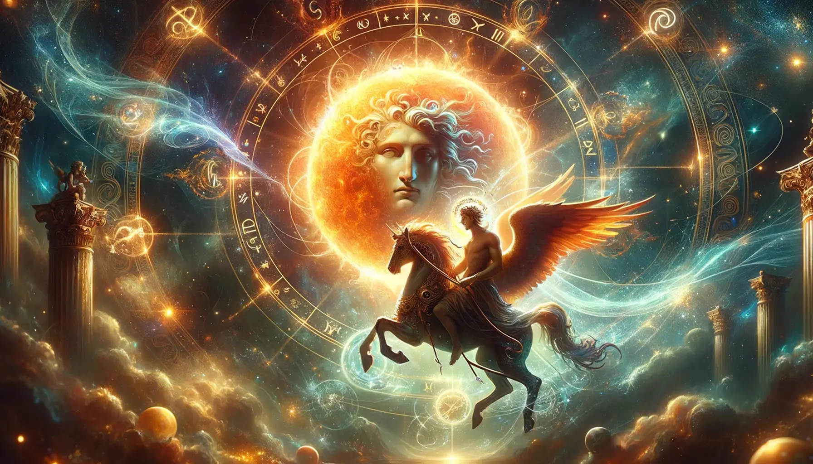
The Sun in astrology symbolizes the core of your identity, representing your spirit, ego, and the vital force that drives you. It signifies your inherent essence, the traits you express overtly, and what makes you unique. The Sun's position in your chart—by sign, house, and aspect—sheds light on your personal strengths, areas for growth, and the life path that aligns with your true self. It influences how you manifest your will, assert your individuality, and the way you seek to make your mark on the world, acting as a guiding star in the journey of self-discovery and expression.
The symbolism and significance of the Sun in astrology are profound, as it is associated with vitality, authority, and the principle of the self. The Sun's radiance and warmth are metaphors for the life force that sustains and motivates us, driving our ambitions and desires. As the central star in our solar system, its astrological symbolism extends to leadership, creativity, and the pursuit of personal glory. The Sun's position in the natal chart highlights areas where we are likely to shine, revealing our potential for creativity, leadership, and the expression of our willpower and individuality.
The Sun is associated with Apollo (Greek mythology) and Helios (Roman mythology), deities of light, the Sun, and prophecy. Apollo, known for his beauty, artistic skills, and oracular powers, represents the Sun's qualities of clarity, truth, and the pursuit of harmony and order. Helios, who drove the chariot of the Sun across the sky, symbolizes the Sun's ceaseless movement and the cyclical nature of life and time. These mythological associations enrich the astrological understanding of the Sun, infusing it with themes of enlightenment, vitality, and the creative force that drives both the universe and the human spirit.
The Sun's influence on personal vitality and ego in astrology is paramount. It energizes and animates our being, fueling our drive to exist, create, and express ourselves. The Sun's placement in the chart indicates how and where we seek to affirm our existence and make an impact, guiding our quest for significance and personal fulfillment. It shapes our ego, the conscious aspect of our personality that we project into the world, influencing how we assert our identity and the confidence with which we approach life's challenges and opportunities. The Sun empowers us to pursue our passions and stand in our truth, embodying the essence of our individuality.
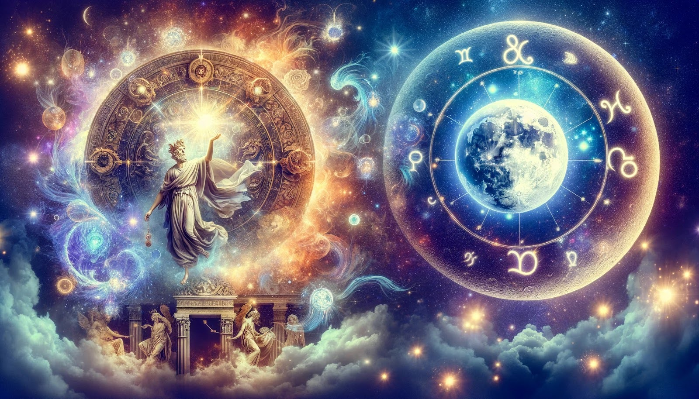
The Moon in astrology reflects our emotional nature, subconscious desires, and instinctual reactions. It acts as the mirror of our emotions, revealing our innermost feelings, needs, and intuitive responses to the world around us. The Moon's position in the astrological chart—by sign, house, and aspect—provides insights into how we nurture and feel nurtured, our ways of expressing emotion, and the undercurrents that drive our instinctive behaviors. It governs our sense of security and comfort, highlighting the areas of life where we seek emotional fulfillment and the manner in which we experience and manage our emotional landscape.
The symbolism and significance of the Moon in astrology are deeply connected to the realms of intuition, nurturing, and the emotional foundation upon which our lives are built. Representing the fluctuating and reflective nature of our emotions, the Moon is akin to a celestial mirror that captures and reflects the light of the Sun, symbolizing how our inner world reflects our conscious experiences. Its phases, from new to full, signify the cyclical and evolving nature of our feelings and emotional needs, underscoring the transformative power of our emotions in driving personal growth and change.
The Moon is associated with Artemis in Greek mythology and Diana in Roman mythology, both goddesses of the hunt, wilderness, childbirth, and virginity. Artemis/Diana, known for her independence, strength, and protective nature, embodies the Moon's qualities of intuition, adaptability, and the nurturing force that sustains life. These deities' connection to the natural world and the cycles of life enriches the astrological Moon's symbolism, emphasizing the instinctual and protective aspects of our emotional and subconscious selves.
The Moon's influence on our inner moods and intuition is profound, as it governs the ever-changing landscape of our emotional and psychological states. It shapes the way we instinctively react to situations, guiding our gut feelings and intuitive perceptions. The Moon's placement in the astrological chart indicates our emotional comfort zones, how we instinctively nurture ourselves and others, and the areas of life where our intuition is most potent. It encourages us to attune to our inner rhythms and cycles, fostering a deeper understanding of our emotional needs and intuitive wisdom.
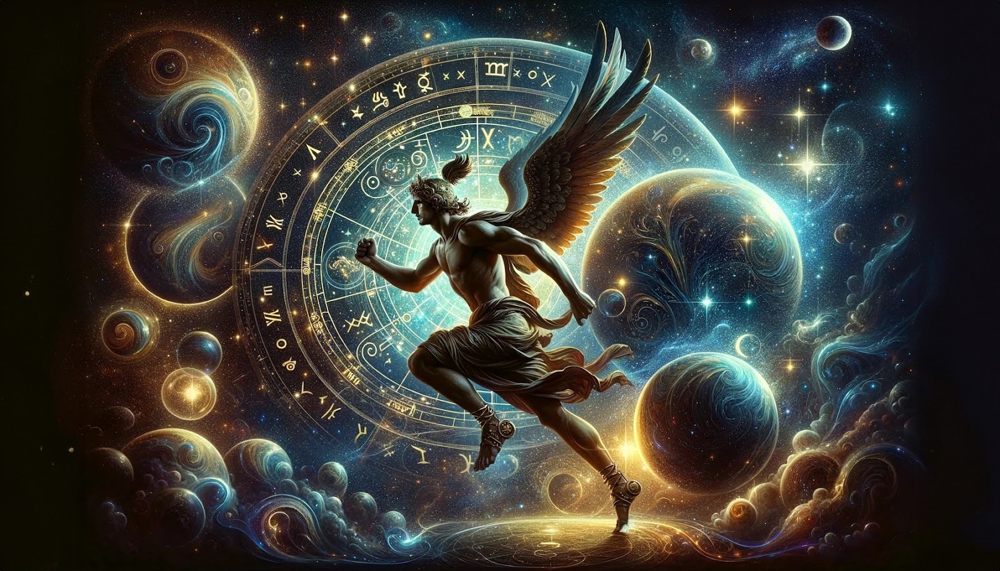
Mercury, known as the Messenger of the Gods, rules over communication, intellect, and exchange of information in astrology. It governs how we think, process information, and express ourselves verbally and non-verbally. Mercury's position in the natal chart—by sign, house, and aspect—illuminates our communication style, learning preferences, and rational processes, offering insights into how we connect, share ideas, and navigate our intellectual landscape. It influences our curiosity, adaptability, and the way we interpret and convey messages, playing a crucial role in our interactions and mental activities.
The symbolism and significance of Mercury in astrology revolve around its role as the bridge between the conscious and unconscious mind, facilitating the flow of ideas, thoughts, and communication. Representing the quicksilver nature of thought and speech, Mercury embodies the connection between individuals and their environment through language, symbols, and movement. Its dual rulership of Gemini and Virgo highlights its versatility in both the exchange of ideas and the practical application of knowledge, underscoring the planet's integral role in fostering understanding and intellectual agility.
Mercury is associated with Hermes in Greek mythology and Mercury in Roman mythology, both gods of commerce, communication, and travelers. Hermes/Mercury, known for his cunning, speed, and role as a messenger among the gods, encapsulates Mercury's astrological themes of mobility, intellect, and the transmission of information. This mythological connection emphasizes Mercury's ability to navigate between worlds, facilitating exchange and understanding, and highlighting its role as the mediator and conveyor of the divine will and human thought.
Mercury's influence extends to the realms of the mind, communication, and travel, shaping our intellectual capabilities, how we articulate our thoughts, and our experiences with short-term travel and movement. It affects our logical reasoning, quick-wittedness, and the way we connect and interact with our immediate environment. Mercury's placement in the chart indicates our preferred modes of learning, our ability to negotiate and adapt, and our propensity for curiosity and exploration. It encourages mental agility, the pursuit of varied interests, and the ability to navigate through life with a versatile and open-minded approach to learning and connecting with others.
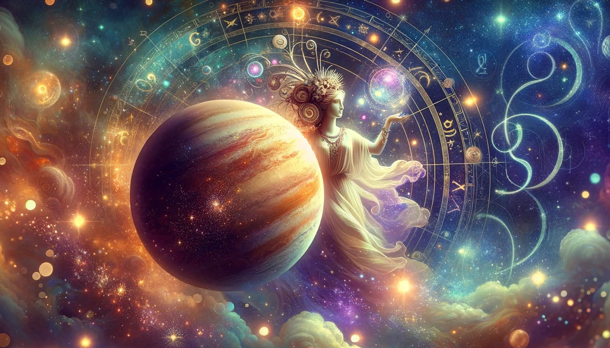
Venus, often referred to as the planet of love and harmony, governs relationships, beauty, and personal values in astrology. It influences how we connect with others, our aesthetic preferences, and what we value and find pleasure in. The position of Venus in the natal chart—by sign, house, and aspect—sheds light on our approach to love and relationships, our sense of art and beauty, and the principles that matter most to us. Venus fosters cooperation, diplomacy, and the ability to appreciate and create harmony in our surroundings, playing a key role in the development of our personal tastes, affections, and the manner in which we seek and give pleasure.
The symbolism and significance of Venus in astrology are deeply intertwined with its association with beauty, balance, and unity. As the embodiment of attraction and the force that draws individuals together, Venus symbolizes the desire for companionship, the joy found in aesthetic experiences, and the pursuit of harmony in personal interactions. Its influence extends to the cultivation of personal values and ethics, guiding us in the appreciation of life's pleasures and the creation of relationships based on mutual respect and affection. Venus' energy encourages the expression of love and the appreciation of beauty in all its forms, highlighting the importance of balance and reciprocity in maintaining harmony.
Venus is associated with Aphrodite in Greek mythology and Venus in Roman mythology, both goddesses of love, beauty, and desire. Aphrodite/Venus, celebrated for her enchanting allure and role in romantic affairs, embodies the qualities of attraction, sensuality, and the creative life force associated with Venusian energy. This mythological connection enriches Venus' astrological themes, emphasizing the power of love and beauty as fundamental forces that drive human connection and artistic expression. The goddesses' narratives underscore the transformative potential of love and the pursuit of aesthetic and sensual pleasures in enriching the human experience.
Venus exerts a significant influence on love, beauty, and personal values, shaping our romantic desires, aesthetic sensibilities, and what we hold dear. Its placement in the astrological chart illuminates our approach to relationships, highlighting the qualities we find attractive and the manner in which we express affection. Venus influences our appreciation for beauty, guiding our artistic inclinations and the pleasure we derive from sensory experiences. It also plays a crucial role in the development of our values, affecting what we prioritize and cherish in life, and how we relate to material possessions and the natural world. Venus encourages the cultivation of love, the appreciation of beauty, and the alignment of our lives with our core values, fostering harmony and fulfillment.
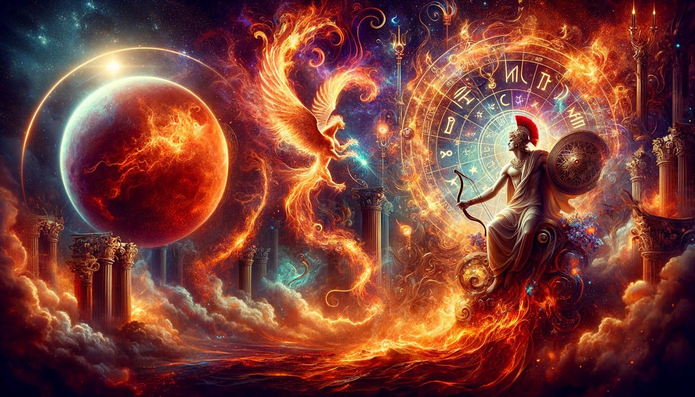
Mars, known as the planet of action and desire, governs our energy, drive, and the instinct to assert ourselves. It represents our capacity for initiative, courage, and the manner in which we pursue our goals and confront challenges. The position of Mars in the natal chart—by sign, house, and aspect—reveals our approach to conflict, our sexual energy, and our drive to assert our will. Mars embodies the warrior spirit, encouraging us to take action, to fight for our desires, and to face obstacles with bravery. Its influence extends to our physical energy and vitality, playing a key role in how we express assertiveness, aggression, and the pursuit of our passions.
The symbolism and significance of Mars in astrology are rooted in its association with primal energy, drive, and the survival instinct. Representing the force that propels us forward, Mars symbolizes the courage to take risks, the assertiveness required to assert our individuality, and the aggression that can arise in the pursuit of our desires. Its influence is seen in our competitive nature, our capacity for decisive action, and the way we respond to challenges and confrontations. Mars' energy fuels our passions and ambitions, motivating us to overcome obstacles and assert our place in the world.
Mars is associated with Aries in Greek mythology and Mars in Roman mythology, both gods of war, representing the raw energy, aggression, and courage associated with martial pursuits. Aries/Mars, known for their strength, bravery, and combat skills, encapsulate Mars' astrological themes of action, conflict, and the will to conquer. This mythological connection highlights the dual nature of Mars' energy, encompassing both the constructive drive to achieve and protect and the potential for destructiveness and discord. The gods' narratives underscore the importance of channeling Mars' dynamic energy constructively, harnessing its power to overcome challenges and assert one's will while maintaining balance and integrity.
Mars significantly influences our energy levels, courage, and approach to conflict, shaping how we assert ourselves and pursue our ambitions. Its placement in the astrological chart dictates our capacity for initiative, our resilience in the face of adversity, and our propensity for confrontation. Mars fuels our physical vitality and sexual drive, imbuing us with the strength and determination to tackle challenges head-on. It governs our instinctual responses to threats, encouraging a fight-or-flight reaction that can manifest as courage and protectiveness or as aggression and competitiveness. Understanding Mars' influence in our chart helps us to harness this dynamic energy constructively, promoting assertiveness and the pursuit of our goals while navigating conflicts with courage and integrity.
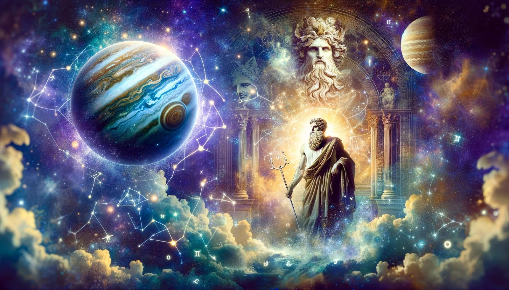
Jupiter, known as the "Great Benefic" in astrology, symbolizes expansion, optimism, and the pursuit of knowledge and truth. It governs our philosophical beliefs, our sense of adventure, and our capacity for growth and abundance. The presence of Jupiter in the astrological chart indicates areas where we might experience luck, prosperity, and where our aspirations reach far and wide. As the largest planet in the solar system, Jupiter's influence extends to higher education, long-distance travel, and the exploration of cultures, philosophies, and religions, encouraging us to broaden our horizons and embrace a more expansive view of the world and our place within it.
The symbolism of Jupiter in astrology is deeply interwoven with themes of growth, abundance, and the quest for meaning. Representing the principle of expansion, Jupiter encourages us to stretch our boundaries, both physically and mentally, and to seek out experiences that enrich our understanding and elevate our perspectives. Its benevolent energy promotes generosity, optimism, and a sense of justice, guiding us toward greater wisdom and the fulfillment of our potential. Jupiter's influence is associated with moral and spiritual growth, as well as the accumulation of material and intellectual wealth, symbolizing the rewards that come from embracing a broader, more inclusive view of life.
Jupiter is named after the king of the gods in Roman mythology, paralleled by Zeus in Greek mythology, both deities representing sovereignty, justice, and the sky's vastness. Zeus/Jupiter's dominion over other gods and humans alike reflects Jupiter's astrological themes of expansion, abundance, and the higher mind's pursuit. Known for their protective role and their ability to bestow blessings and luck, these mythological figures embody Jupiter's capacity to inspire growth, optimism, and the exploration of life's greater truths, reinforcing the planet's role as a source of benevolence and possibility in astrology.
Jupiter's influence in astrology is marked by its capacity to foster growth, optimism, and abundance in various aspects of life. Its placement in the natal chart can indicate where opportunities for expansion and success are most likely to be found, be it through intellectual pursuits, cultural exploration, or the accumulation of wealth. Jupiter encourages us to aim higher, dream bigger, and embrace a positive outlook, often bringing a sense of joy and good fortune to the areas it touches. Its expansive nature can also lead to excess, reminding us of the importance of balance and moderation even in the pursuit of our most ambitious goals.
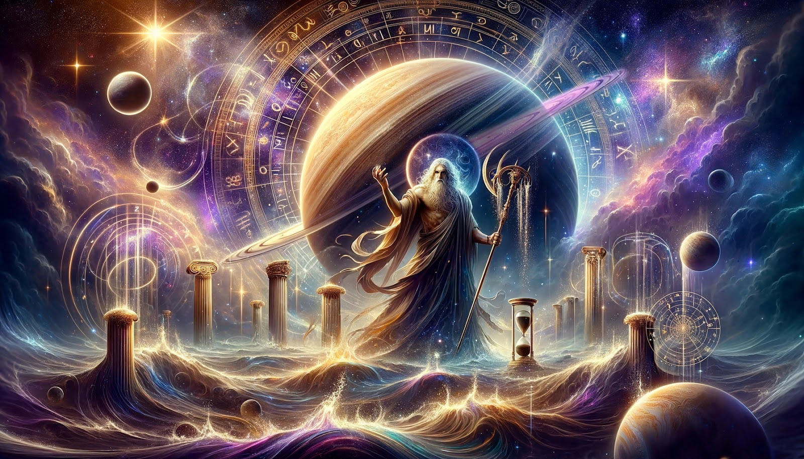
Saturn in astrology represents discipline, responsibility, and the structures that govern our lives. Known as the "Taskmaster," Saturn's influence is associated with hard work, perseverance, and the lessons learned through facing challenges and limitations. Its position in the astrological chart points to areas where we may encounter obstacles and the need for structure, encouraging a methodical, disciplined approach to achieving our goals. Saturn's energy teaches the value of patience, maturity, and the wisdom that comes from enduring trials, ultimately helping to build character and resilience.
The symbolism of Saturn in astrology revolves around its role as the bringer of structure, discipline, and order. It represents the boundaries that define and contain our lives, from societal laws to personal limitations, emphasizing the need for stability, hard work, and perseverance. Saturn's energy is sobering and realistic, compelling us to confront the realities of our existence and the hard work required to manifest our ambitions. It teaches the importance of commitment, responsibility, and the acceptance of time's passage, guiding us toward lasting achievements and the mastery of our chosen paths.
Saturn is named after the Roman god of agriculture and time, paralleled by Cronus in Greek mythology, both deities associated with the passage of time, cycles, and the reaping of consequences. Cronus/Saturn's reign was marked by a golden age of stability and prosperity, reflecting Saturn's astrological themes of structure and discipline. However, the mythological narrative of Cronus's eventual downfall also encapsulates Saturn's lessons of karma, the inevitability of change, and the limits imposed by time, emphasizing the planet's role in teaching resilience, endurance, and the value of hard-earned wisdom.
Saturn's influence on structure, discipline, and life lessons is integral to our personal development and achievement. Its placement in the natal chart indicates where we must apply effort, face our fears, and accept responsibility in order to grow and achieve our goals. Saturn challenges us with restrictions and obstacles, compelling us to cultivate discipline, patience, and perseverance. Its lessons may be harsh, but they are essential for building character, defining our ambitions, and achieving lasting success. Saturn reminds us that true achievement is the result of sustained effort and the acceptance of the limitations that define our human experience.
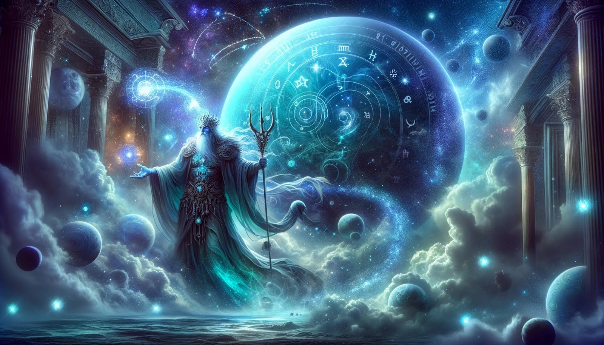
Uranus, known as the harbinger of change and innovation in astrology, represents sudden shifts, freedom, and the breaking of conventions. It governs the realms of originality, technological advancement, and collective movements, encouraging the overthrow of outdated structures and the embrace of forward-thinking ideas. The placement of Uranus in the astrological chart signifies areas of life where individuals may experience unexpected changes, awakenings, and a strong desire for independence and autonomy. Uranus's influence promotes the questioning of traditional norms, pushing for progress and the expression of individuality through revolutionary ideas and actions.
The symbolism and significance of Uranus in astrology are rooted in its association with enlightenment, breakthroughs, and the higher mind's capacity for innovation. Representing the archetype of the rebel and the genius, Uranus embodies the spirit of invention and the drive to transcend conventional boundaries. Its energy is unpredictable and erratic, mirroring the sudden flashes of insight and the radical shifts in perspective that can alter the course of our lives. Uranus challenges us to embrace change, champion freedom, and pursue a future that reflects our most idealistic visions and values.
Uranus is associated with the Greek sky god Uranus, the primordial deity of the heavens and one of the original Titans. In mythology, Uranus represents the vast, untamed expanse of the sky, symbolizing limitless potential and the original state of chaos from which new orders emerge. This mythological connection underscores Uranus's astrological themes of upheaval, liberation, and the radical break from the status quo necessary for new beginnings. The story of Uranus's overthrow by his son Cronus reflects the cyclic nature of revolution and change, highlighting the planet's role in fostering evolution through disruption.
Uranus's influence on innovation, rebellion, and freedom is profound, as it drives the quest for autonomy, originality, and the reformation of societal norms. Its placement in the natal chart reveals where we are likely to challenge conventions, embrace technological advancements, and advocate for social change. Uranus inspires us to think outside the box, fostering creativity and the courage to implement visionary ideas. It encourages the pursuit of freedom, not just on a personal level but also in the context of broader societal and humanitarian concerns, urging us to break free from limitations and to champion progress and equality.
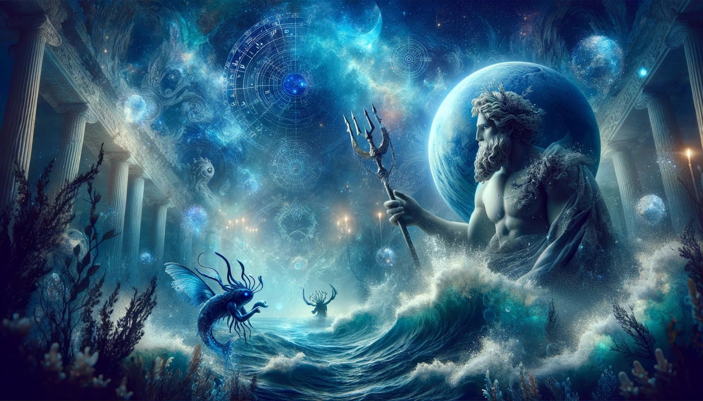
Neptune, in astrology, represents the dissolution of boundaries, governing the realms of imagination, spirituality, and the subconscious. It is associated with dreams, illusions, and the transcendental aspects of life, blurring the lines between reality and fantasy. Neptune's placement in the astrological chart highlights areas where we may experience confusion, inspiration, and a deep connection to the collective unconscious. Its influence encourages us to explore the depths of our psyche, embrace our intuition, and connect with the universal themes of love and compassion, often leading to profound spiritual insights and creative inspiration.
The symbolism and significance of Neptune in astrology are deeply connected to its role as the planet of mysticism, illusion, and the dissolution of ego boundaries. Neptune embodies the oceanic feeling of oneness with all of existence, representing the longing to transcend the material world and merge with the divine. Its energy is elusive and intangible, reflecting the nebulous nature of dreams, fantasies, and the unseen forces that shape our lives. Neptune invites us to explore the realms of imagination and spirituality, offering a gateway to the sublime and the opportunity to experience the transcendent beauty of the universe.
Neptune is associated with Poseidon in Greek mythology and Neptune in Roman mythology, the god of the sea, earthquakes, and horses. Known for his tempestuous nature and power over the waters, Poseidon/Neptune symbolizes the boundless, fluid aspect of the ocean, reflecting Neptune's astrological themes of dissolution and the vast, uncharted territories of the subconscious mind. This mythological connection emphasizes Neptune's capacity to erode rigid structures and boundaries, highlighting its influence on our ability to connect with the ethereal, dreamlike aspects of existence and the collective pool of human emotions and creativity.
Neptune's influence on imagination, spirituality, and illusion is central to its astrological significance, as it shapes our capacity for creative visualization, our spiritual beliefs, and our susceptibility to deception. Its placement in the natal chart can indicate heightened artistic sensitivity, profound empathic connections, and a deep yearning for spiritual unity. Neptune blurs the lines between truth and fiction, challenging us to discern reality from illusion while encouraging us to embrace the beauty of our dreams and ideals. Its energy fosters a sense of compassion and interconnectedness, urging us to tap into the wellspring of creativity and spiritual wisdom that lies within the collective human experience.
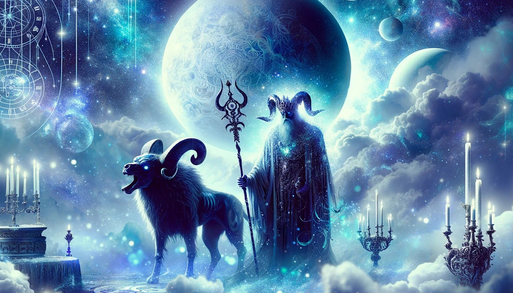
Pluto in astrology is known as the transformer of realms, governing deep change, rebirth, and the subconscious forces that drive evolution. It represents the process of destruction and regeneration, where old forms must be relinquished for new growth to occur. The placement of Pluto in the natal chart points to areas of life where profound transformation can take place, often through intense experiences that challenge our core. Pluto's energy compels us to look beneath the surface, confront our shadows, and embrace the transformative power of truth and renewal, leading to profound personal metamorphosis and empowerment.
The symbolism and significance of Pluto in astrology are rooted in its association with the underworld, representing the cycle of death and rebirth that is fundamental to life. Pluto embodies the principle of fundamental change, stripping away what is unnecessary or inauthentic to reveal a deeper truth. Its influence is felt in our deepest desires, fears, and the transformative processes that shape our character. Pluto's energy is intense and relentless, demanding that we surrender to the transformative fires that refine and redefine our essence, leading to a profound regeneration of the self.
Pluto is associated with Hades in Greek mythology and Pluto in Roman mythology, the god of the underworld and the riches it contains. This deity governs the realm of the dead, symbolizing the end of life and the transition to a new state of being. Hades/Pluto's domain over the hidden wealth of the Earth, such as precious metals and gems, reflects Pluto's astrological themes of transformation, power, and renewal that come from deep within. This mythological connection underscores the planet's role in uncovering hidden truths, facilitating deep psychological change, and fostering a rebirth of the self through confronting and integrating the darker aspects of our psyche.
Pluto's influence on transformation, power, and regeneration is profound, as it drives the process of profound change that leads to personal growth and empowerment. Its placement in the astrological chart indicates where we will encounter the forces of destruction and rebirth, compelling us to confront and transcend our limitations. Pluto challenges us to face our fears, delve into the depths of our psyche, and embrace the transformative power of letting go. Through this process, we gain a deeper understanding of our inner strength and the ability to wield power wisely, leading to a regenerated self that is more authentic and empowered.
Understanding aspect patterns and planetary dignities is crucial for a comprehensive astrological analysis. Aspect patterns reveal the dynamic relationships between the planets in a natal chart, highlighting areas of tension, harmony, and potential growth. Planetary dignities, including rulership, exaltation, detriment, and fall, provide insight into the strength and ease with which a planet expresses its energies. By examining these factors, astrologers can discern the complex interplay of influences that shape an individual's character and life experiences, offering a nuanced understanding of their potential challenges and strengths.
Synthesizing planetary influences involves integrating the diverse energies of the planets, signs, houses, and aspects in an astrological chart to foster personal growth. This holistic approach allows individuals to understand the multifaceted nature of their personality and life circumstances, identifying areas for development and opportunities for leveraging their innate strengths. By recognizing the interconnections between the various astrological elements, one can devise strategies for personal evolution, harnessing the constructive aspects of their cosmic blueprint while mitigating challenges, leading to a more balanced and fulfilling life journey.
Reflecting on the cosmic influence in daily life involves acknowledging the subtle yet profound impact of astrological energies on our everyday experiences. By attuning to the planetary movements and their correlations with our moods, behaviors, and the events around us, we can gain insights into the rhythms and cycles that underpin our existence. This awareness encourages mindfulness and a deeper connection to the universe, helping us navigate life with greater harmony and alignment with the cosmic forces that shape our reality, and fostering a sense of unity with the larger cosmic order.
Harnessing planetary potential for self-discovery and fulfillment requires a conscious engagement with the energies reflected in one's astrological chart. By understanding the influences of the planets and their interactions, individuals can tap into their unique strengths, navigate challenges with wisdom, and align their actions with their highest potential. This process of astrological self-exploration empowers individuals to live authentically, make choices that reflect their true selves, and pursue paths that lead to personal satisfaction and a sense of cosmic purpose, ultimately contributing to a life rich in meaning and fulfillment.
Understand your birth chart, moon sign, moon phase and more
Sign up to recieve free daily readings, insights, horoscopes and more